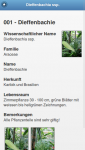
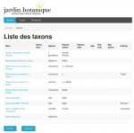

Projets locaux
Jardin botanique III, 14 juillet 2014
Biologie, Jardin botanique, Susan Bollinger, Projet interne.
Site :
 site du projet
site du projet
Buts du projet :
Regrouper les différents projets réalisés pour le Jardin botanique (la base de données des 10’000 plantes, l’application iPhone BoGart avec les parcours du jardin) dans une seule et même base de données (BDD) afin d’offrir une gestion centralisée et unifiée des différents outils, et également d’étendre le public cible aux étudiants en médecine et biologie ayant besoin d’accès plus particuliers à la base de données des plantes.
- 

L’application iPhone est remplacée par une web application en jQuery Mobile permettant aux parcours BoGart d’être accessibles depuis n’importe quel smartphone (y compris Android, Windows Phone), tablette et même ordinateur de bureau.
- 
La BBD des plantes offrira prochainement une interface ouverte au publique avec des informations limitées concernant les différentes plantes.
Les informations ainsi contenues dans l’unique base de données seront utilisées dans tous les aspects précédemment énoncés, facilitant la mise à jour des informations concernant les plantes et les parcours.
Cadre et Partenariat du projet :
Projet interne de l’Université de Fribourg
Biologie, Jardin botanique, Susan Bollinger, Josef Schoepfer
Centre NTE (nte@unifr.ch)
2013
Discipline et Public du cours :
Université dans son ensemble
Les étudiants en médecine et biologie
Le public visitant le Jardin botanique
Plus d'informations sur :
|
|
Agathokles
Département des Sciences Historiques, Prof. N. Badoud, Projet interne
|
|
|
Antiquit@s
Histoire, Prof. M. Piérart, Projet Campus Virtuel Suisse
|
|
|
Typika
Histoire de l’art et Archéologie, Prof. J.M. Spieser, Projet interne
|
|
|
Callisto
Domaine Histoire de l’Art et archéologie, Prof. V. Dasen, Projet interne
|
|
|
Equal+
Didactic, Prof. B. Charlier, Dr Anne-Françoise Gilbert, Projet interne.
|
|
|
Epiphania
Théologie, Anne Marie Austenfeld, Projet interne.
|
|
|
Orthodoxia
Théologie, Prof. B. Hallensleben, Projet interne
|


{kind=link}
{kind=link}